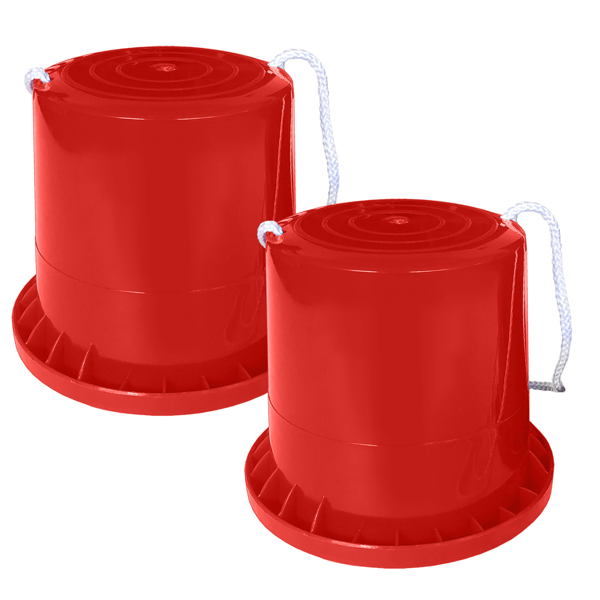
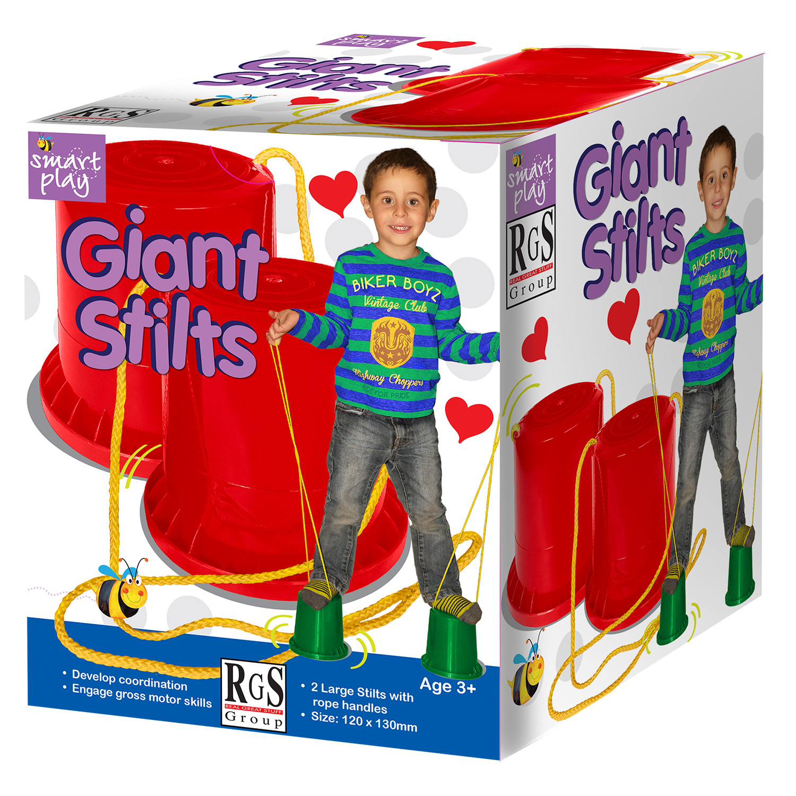

Giant Stilts
Beach and Outdoor
R95Bucket Balance Stilts have long been a great toy for children to improve balance and coordination.The flared base with anti-slip top texture ensures you never worry about falling.The braided rope line for handles ensures great grip.With a 130mm height, you’ll get a whole new view of your entire world.Launch your outdoor stomping fun to whole new heights with the Bucket Balance StiltsEach set includes 2 stepper bases and braided rope lines and measure 120 x 130mm.Highly durable construction and materials for lasting enjoyment.Age 3+.
Enquire about this product


Giant Stilts at Kids Corner KZN
Giant Stilts is part of our Beach and Outdoor collection. Kids Corner KZN stocks toys for learning, pretend play, creative play, gifting and everyday childhood discovery in South Africa.
Browse more Beach and Outdoor toys